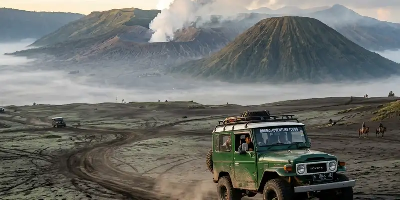

Motor trail wisata Bromo dari Malang adalah perjalanan offroad menggunakan motor trail menuju kawasan Bromo, yang dirancang sebagai fun trail ramah pemula dengan pendampingan pemandu profesional sepanjang rute.
Ringkasan Inti
- Rute motor trail Bromo dirancang sebagai fun trail, bukan jalur ekstrem murni.
- Peserta pemula tetap dapat menikmati pengalaman offroad dengan motor standar dan guide berpengalaman.
- Perjalanan biasanya dimulai pagi hari dari Malang menuju kawasan Bromo.
- Lautan pasir Bromo menjadi salah satu momen paling berkesan dalam perjalanan.
- Rombongan kecil membuat pengalaman lebih personal dan mendukung interaksi antarpeserta.
Apa Itu Motor Trail Wisata Bromo dari Malang
Motor trail wisata Bromo dari Malang adalah paket perjalanan offroad menggunakan motor trail yang membawa peserta menjelajahi rute alam menuju kawasan Bromo, dipandu oleh guide profesional sepanjang perjalanan.
Perjalanan jenis ini dimulai dari Malang sekitar pukul 09.00 pagi, dengan rute yang dirancang sebagai kombinasi antara eksplorasi alam dan pengalaman sosial yang hangat antarpeserta. Format perjalanan ini berbeda dari sekadar city tour karena melibatkan medan offroad yang menantang namun tetap terkendali.
Rute yang dilalui bukan sekadar perjalanan biasa, karena peserta akan melewati berbagai jenis medan sebelum akhirnya mencapai kawasan lautan pasir Bromo yang menjadi highlight utama dari perjalanan ini.
Apakah Rute Ini Cocok untuk Pemula Tanpa Pengalaman Offroad
Rute motor trail Bromo dari Malang cocok untuk pemula karena dirancang sebagai fun trail yang menantang namun tetap aman untuk peserta tanpa pengalaman offroad sebelumnya.
Wisata motor trail ke Bromo dari Malang sangat cocok untuk pemula karena rutenya didesain sebagai fun trail, bukan jalur ekstrem. Dengan motor standar dan pendampingan guide profesional, peserta tetap bisa menikmati sensasi offroad tanpa harus memiliki pengalaman khusus sebelumnya.
Pendekatan ini membuat rute Bromo menjadi pilihan populer bagi wisatawan yang penasaran mencoba motor trail namun ragu karena belum pernah mencoba aktivitas serupa. Pendampingan guide memastikan peserta tetap merasa aman meski medan yang dilalui cukup menantang.

Melintasi lautan pasir Bromo dengan panduan profesional memberikan keamanan maksimal bagi pemula.
Apa yang Membuat Pengalaman Ini Terasa Aman dan Berkesan
Pengalaman motor trail Bromo terasa aman dan berkesan karena kombinasi antara rute yang telah disesuaikan, pendampingan guide berpengalaman, serta suasana rombongan kecil yang mendukung interaksi personal antarpeserta.
Rute ini bukan untuk adu skill ekstrem, sehingga peserta dapat menikmati pengalaman offroad tanpa rasa takut berlebihan. Setup perjalanan yang dirancang matang ini membuat wisatawan dengan latar belakang berbeda tetap dapat menikmati sensasi menjelajah medan alam.
Bagian yang paling memorable dari perjalanan biasanya saat masuk ke kawasan Lautan Pasir Bromo, di mana peserta dapat merasakan sensasi berkendara di medan pasir yang luas sekaligus menikmati pemandangan alam yang khas dari kawasan pegunungan Bromo.
Bagaimana Suasana Rombongan Kecil Memengaruhi Pengalaman Perjalanan
Suasana rombongan kecil memengaruhi pengalaman perjalanan dengan menciptakan interaksi yang lebih personal dan hangat antarpeserta, dibanding perjalanan dalam rombongan besar yang cenderung lebih formal.
Perjalanan dengan rombongan kecil, misalnya sekitar tiga hingga lima orang, membuat suasana terasa lebih intim, sehingga interaksi antar peserta justru jadi highlight, bukan hanya riding, tapi juga bonding. Hal ini menjadikan pengalaman motor trail lebih dari sekadar aktivitas fisik, tetapi juga momen membangun relasi baru.
Bagi wisatawan solo yang bergabung dengan rombongan kecil semacam ini, suasana yang hangat dapat membantu mengurangi rasa canggung, terutama karena seluruh peserta umumnya memiliki minat yang sama terhadap petualangan alam.
Kesimpulan
Motor trail wisata Bromo dari Malang menjadi pilihan menarik bagi pemula yang ingin mencoba sensasi offroad tanpa risiko berlebihan. Dengan rute yang dirancang ramah pemula, pendampingan guide profesional, serta suasana rombongan kecil yang hangat, pengalaman ini dapat menjadi momen berkesan bagi wisatawan solo maupun kelompok kecil.
FAQ
Perjalanan umumnya dimulai sekitar pukul 09.00 pagi dari Malang menuju kawasan Bromo.
Kebijakan dapat bervariasi tergantung operator, sehingga sebaiknya ditanyakan langsung sebelum melakukan pemesanan.
Bisa, karena format rombongan kecil justru dirancang agar peserta solo dapat bergabung dan berinteraksi dengan peserta lain selama perjalanan.